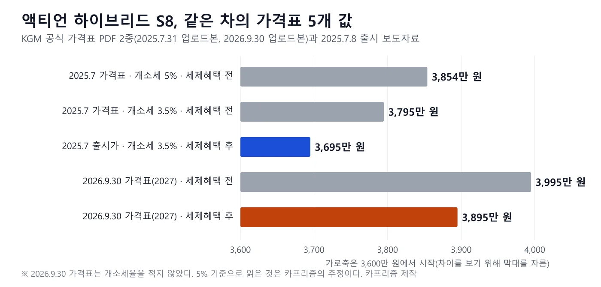
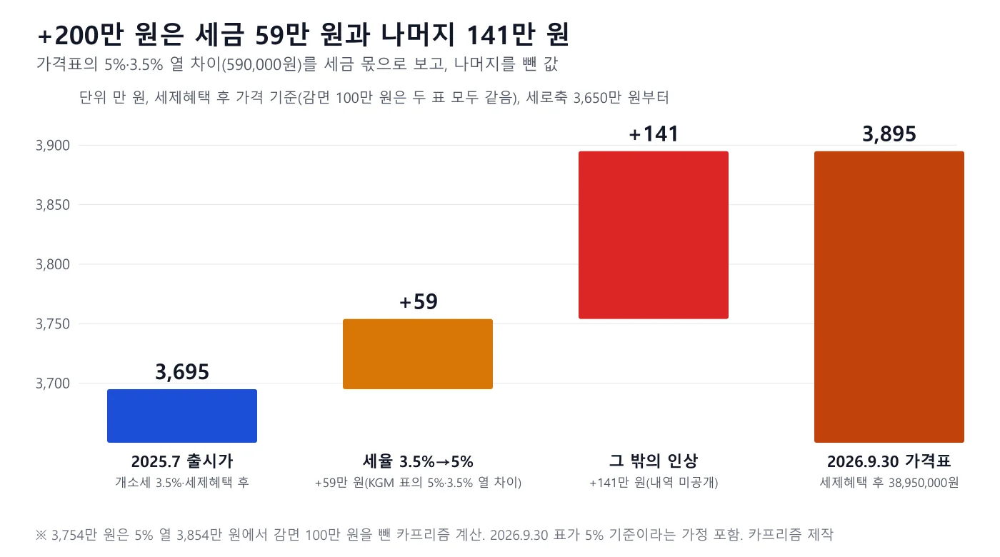
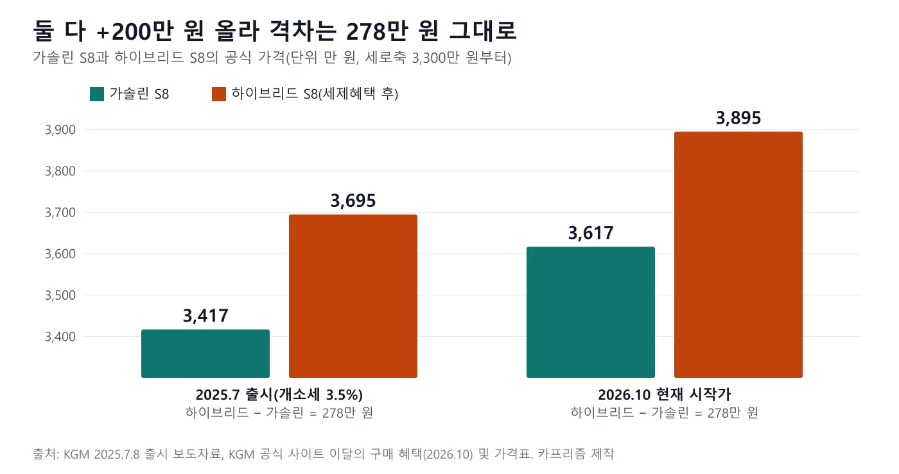
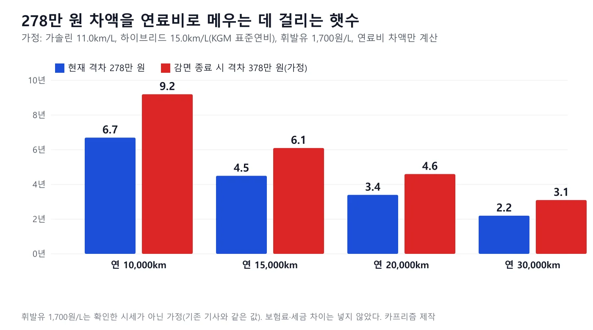
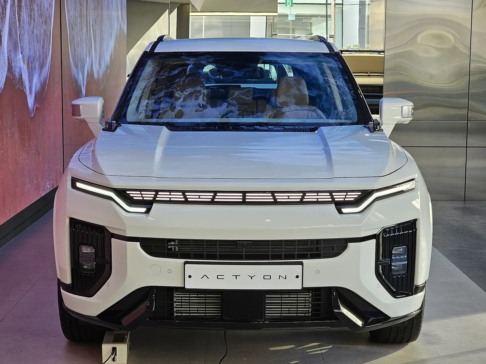
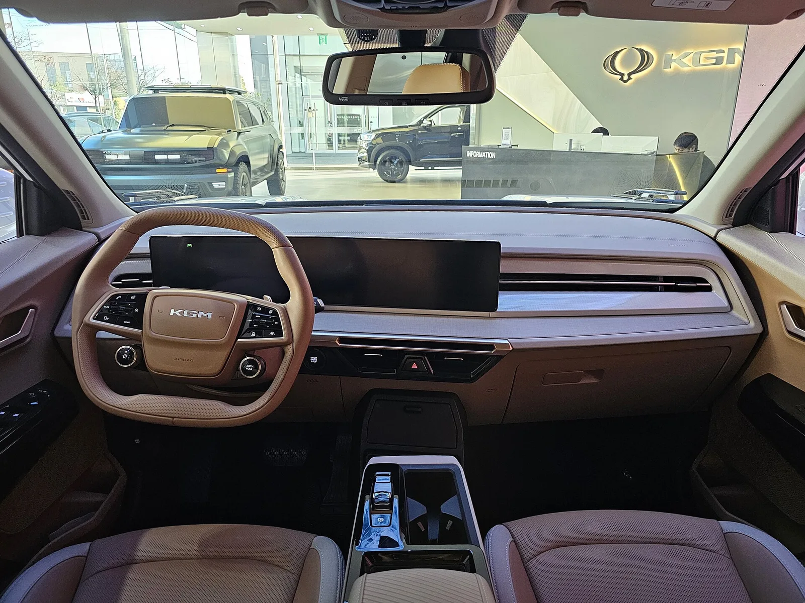
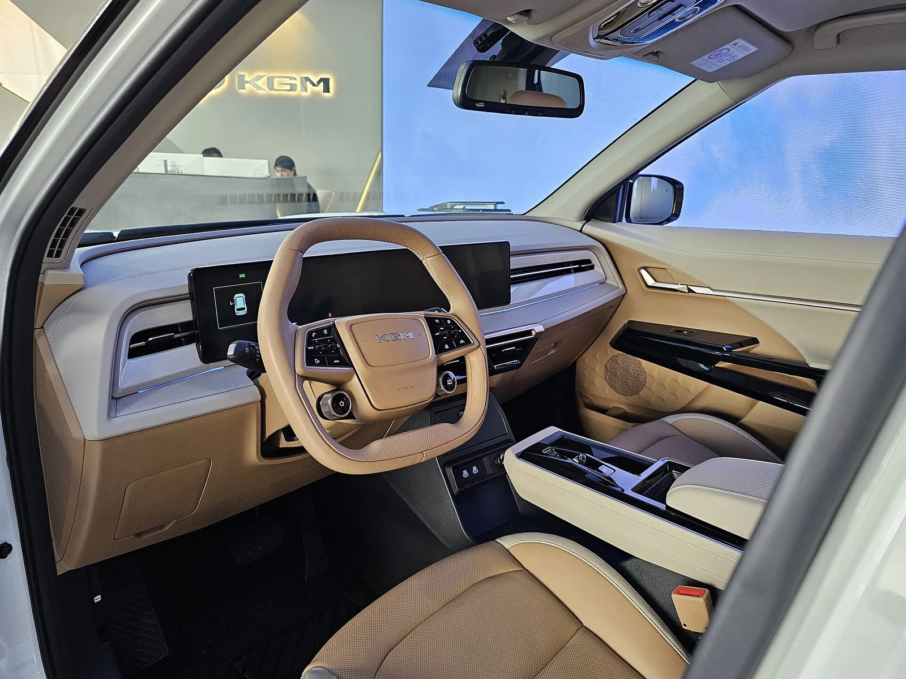

▲ 국내 전시장에 놓인 KGM 액티언. 촬영 시점이 2024년 11월로 하이브리드 출시(2025년 7월) 이전이라 하이브리드가 아닌 모델이다 ⓒ Damian B Oh, Wikimedia Commons (CC BY-SA 4.0)
"3,695만 원이라더니 왜 3,895만 원이야?" KGM 액티언 하이브리드(S8 단일 트림)를 두고 이런 의문이 나오는 이유는 두 숫자가 모두 공식 자료에 있기 때문이다. 3,695만 원은 2025년 7월 8일 출시 보도자료의 값이고(개별소비세 3.5%, 친환경차 세제혜택 반영), 3,895만 원은 2026년 9월 30일자로 등록된 공식 가격표와 10월 공식 사이트의 시작가다(친환경차 세제혜택 후). 둘 다 세제혜택 반영 후 가격이라 반영 여부의 차이는 아니다. 차이 200만 원은 시점이 달라 세율이 3.5%에서 5%로 돌아온 몫과 2027년형 가격표의 나머지 인상이 합쳐진 값으로 보이며, 2026년 9월 30일 가격표가 개소세율을 적지 않았으므로 5% 기준이라고 가정하면 세금 몫은 KGM 2025년 가격표의 5%·3.5% 열 차이로 59만 원이다(나머지 141만 원은 KGM이 내역을 밝히지 않았다). 모든 가격은 부가세 포함, 취득세·등록비 별도, 계산식은 본문에 적었다.
1. 두 숫자는 같은 차의 다른 날짜다
먼저 우리 사이트의 8월 22일 기사 "트림을 하나로 줄였다"… 액티언이 3,417만 원에 건 승부부터 바로잡는다. 그 글은 하이브리드 3,695만 원, 가솔린 3,417만 원을 현재 가격처럼 적었지만, 두 값은 2025년 7월 8일 출시 당시 값(개소세 3.5%)이다. 2026년 10월 현재 KGM 공식 사이트의 시작가는 하이브리드 3,895만 원, 가솔린 3,617만 원이다. 그 글의 "2027년형 가솔린 3,517만 원"도 현재 공식 시작가와 다르며, 이 값은 이번에 KGM 공식 자료에서 확인하지 못했다(외부 자동차 정보 사이트 공지에는 있다).
검색 요약에서 보이는 "3,695만 원(개소세 3.5%, 친환경차 세제혜택 반영)"과 "3,895만 원"이 충돌하는 것처럼 보이는 것도 같은 이유다. 아래 세 가설을 공식 자료로 하나씩 확인했다.
| 가설 | 확인한 내용 | 결론 |
|---|---|---|
| (a) 시점이 다르다(개소세 3.5%→5%) | 3,695만 원은 2025.7.8 보도자료에 "개별소비세 3.5%"로 명시. 3,895만 원은 2026.9.30 등록 가격표라 3.5% 인하가 끝난 2026.7.1 이후다 | 맞다. 두 값은 서로 다른 세율 구간의 값이다 |
| (b) 세제혜택 반영 전·후가 다르다 | 3,695만 원도 "친환경차 세제 혜택 반영", 3,895만 원도 "세제혜택 후"(가격표 −100만 원) | 아니다. 둘 다 반영 후 가격이다 |
| (c) 연식·트림이 다르다 | 둘 다 S8 단일 트림. 연식은 출시 당시 모델과 가격표 제목 "액티언 하이브리드 2027"로 다르다 | 연식은 다르다. 트림은 같다 |
📍 이 글이 쓴 공식 자료 4종
① 2025.7.8 출시 보도자료(가격·세율 문구 포함) ② 2025.7.31 파일로 등록된 가격표 PDF(5%·3.5%·세제혜택 후 3개 값) ③ 2026.9.30 파일로 등록된 가격표 PDF "액티언 하이브리드 2027" ④ 2026년 10월 공식 사이트 모델 페이지와 이달의 구매 혜택(시작가). PDF의 날짜는 파일명에 든 등록일이며 게시일과 다를 수 있다. 경쟁 모델 가격은 이 글에 넣지 않았다.
2. 공식 가격표가 가진 5개 값
KGM은 2025년 가격표에 개소세 5%, 3.5%, 세제혜택 후 세 값을 나란히 적었다. 2026년 9월 30일 등록본은 세제혜택 전과 후 두 값만 적고 개소세율은 적지 않았다. 공급가액 36,318,182원과 부가세 3,631,818원을 더하면 39,950,000원으로 세제혜택 전 값과 정확히 맞는다(node 검산).

▲ 같은 S8 단일 트림의 가격표 값 5개. 파란색이 출시가, 주황색이 현재 가격표의 세제혜택 후 값이다 ⓒ 카프리즘 제작(KGM 공식 가격표·보도자료)
| 자료(등록일) | 개소세 | 세제혜택 전 | 세제혜택 후 | 감면액 |
|---|---|---|---|---|
| 가격표 PDF(2025.7.31) | 5% 적용 시 | 3,854 | 표기 없음 | — |
| 가격표 PDF(2025.7.31) | 3.5% 적용 시 | 3,795 | 3,695 | 100 |
| 출시 보도자료(2025.7.8) | 3.5% | — | 3,695 | — |
| 가격표 PDF(2026.9.30, "2027") | 표기 없음 | 3,995 | 3,895 | 100 |
| 공식 사이트 시작가(2026.10) | 표기 없음 | — | 3,895 | — |
2025년 가격표의 열 차이로 보면 5%와 3.5%의 차이는 3,854−3,795=59만 원이고, 3.5% 열에서 세제혜택 후까지의 감면은 3,795−3,695=100만 원이다. 2026년 9월 30일 표의 감면도 3,995−3,895=100만 원으로 같다.
3. +200만 원을 쪼개면 세금 59만 원, 나머지 141만 원
방법은 단순하다. 세제혜택 후 가격 3,695만 원에서 3,895만 원까지의 차이 200만 원을 같은 감면(100만 원)을 거친 값끼리 비교한다. 그다음 KGM 2025년 가격표의 5%·3.5% 열 차이 59만 원을 세율 몫으로 떼어 낸다. 이 분해는 2026년 9월 30일 가격표의 3,995만 원이 개소세 5% 기준이라는 가정 위에 있다. 비교 기준도 구분해야 한다. 3,695만→3,895만 원은 세제혜택 후끼리의 비교이고, 3,854만→3,995만 원은 세제혜택 전끼리의 비교다. 감면이 두 표 모두 100만 원이라 차이는 같은 200만 원이 된다(3,854−100=3,754, 3,995−100=3,895).
| 단계 | 계산식 | 값 |
|---|---|---|
| 세제혜택 후 가격 차이 | 3,895 − 3,695 | +200 |
| 세율 몫(3.5%→5%) | 3,854 − 3,795(2025 가격표 열 차이) | +59 |
| 2025 가격표 5% 기준 감면 후 | 3,854 − 100 | 3,754 |
| 그 밖의 인상 | 3,895 − 3,754(= 3,995 − 3,854) | +141 |
| 검산 | 59 + 141 | 200 |

▲ +200만 원은 세율 몫 59만 원과 나머지 141만 원으로 나뉜다. 2026.9.30 표가 5% 기준이라는 가정이 들어간 카프리즘 추정이다 ⓒ 카프리즘 제작(KGM 공식 가격표 기반)
✅ 이 분해를 믿기 전에 확인할 점
· 2026.9.30 가격표는 개소세율을 적지 않았다. 3.5% 인하가 2026년 6월 30일에 끝나 7월 1일부터 5%로 돌아왔다는 점(정책브리핑 2025.12.26 발표)에서 5% 기준으로 읽은 것이다
· "그 밖의 인상 141만 원"에 연식변경 사양, 가격 조정 중 무엇이 들어 있는지 KGM은 공개하지 않았다. 원인을 단정하지 않는다
· 59만 원은 가격 구간이 같은 2025년 표의 열 차이다. 2027년형 반출가격이 달라졌다면 세율 몫도 조금 다를 수 있다
· 같은 방식으로 가솔린을 분해하려면 가솔린 S8의 5%·3.5% 열이 필요한데 확인하지 못했다
📍 중간 단계 값 3,790만 원은 공식 확인 못 함
외부 자동차 정보 사이트(카위키)는 2026년 5월 19일 공지에서 2027년형 액티언이 "개별소비세 적용 시" 가솔린 S8 3,517만 원, 하이브리드 S8 3,790만 원부터 판매된다고 적었다. 세율과 세제혜택 반영 여부가 적혀 있지 않고 KGM 공식 보도자료·가격표로는 확인하지 못해 위 분해에 넣지 않았다. 이 값이 맞다면 출시가→5월(+95만 원)→10월(+105만 원)로 두 번에 나뉘어 올랐다는 뜻이지만, 지금은 확인되지 않은 가정이다.
4. 가솔린도 같이 올랐다 — 278만 원 격차는 그대로
가솔린 S8은 2025년 7월 보도자료에서 3,417만 원(개소세 3.5%)이었고, 2026년 10월 공식 사이트 이달의 구매 혜택과 모델 페이지의 시작가는 3,617만 원이다. 하이브리드와 같이 +200만 원이다. 하이브리드와의 격차는 3,695−3,417=278만 원이었고, 3,895−3,617=278만 원으로 그대로다.

▲ 두 파워트레인이 같은 폭(+200만 원)으로 올라 하이브리드 프리미엄 278만 원은 변하지 않았다 ⓒ 카프리즘 제작(KGM 보도자료·공식 사이트)
| 구분 | 2025.7.8 출시(개소세 3.5%) | 2026.10 공식 사이트 시작가 | 인상 |
|---|---|---|---|
| 가솔린 S8 | 3,417 | 3,617 | +200 |
| 하이브리드 S8(세제혜택 후) | 3,695 | 3,895 | +200 |
| 격차 | 278 | 278 | 0 |
이 격차 278만 원은 2025년 6월 사전계약 때 KGM이 "가솔린 대비 약 200만 원"이라고 밝힌 폭(최종 가격 3,650만~3,750만 원 범위 제시)보다 컸다는 점도 눈에 띈다. 출시 보도자료는 최종 인상폭을 약 270만 원 수준으로 적었고, 가격표 값으로 계산하면 278만 원이다. 가솔린 가격은 출시 보도자료와 현재 시작가만 확인했고, 중간 연식의 공식 가격표는 열람하지 못했다.
KGM 이달의 구매 혜택 바로가기5. 감면 70만 원인데 가격표는 100만 원이라고 적는 이유
KGM 가격표의 "세제혜택 후 −100만 원"은 법정 감면 한도 70만 원과 다른 숫자가 아니다. 앞선 기사 "내년 출고분이면 얼마나 오르나?"… 쏘렌토 하이브리드 가격표 +100만 원에서 쓴 계산과 같다. 하이브리드 개소세 감면 한도 70만 원에 교육세(개소세의 30%, 21만 원)와 부가세(10%, 9만 1,000원)가 따라 줄어 가격표에서는 약 100만 원(70+21+9.1=100.1)으로 나타난다. 이 글은 두 표기를 이렇게 구분한다. 법정 한도는 "감면 한도 70만 원", 가격표 숫자는 "가격표 100만 원"이다.
| 항목 | 계산식 | 값 |
|---|---|---|
| 개소세 감면 한도 | 법정 한도(하이브리드) | 70 |
| 교육세 감소분 | 70 × 30% | 21 |
| 부가세 감소분 | (70 + 21) × 10% | 9.1 |
| 가격표 환산 감면액 | 70 + 21 + 9.1 | 100.1(가격표 표기 100) |
이 감면은 정부안대로면 2026년 12월 31일 끝난다. 그러면 가격표의 세제혜택 후 3,895만 원이 세제혜택 전 3,995만 원으로 올라가는 구조다(가격 동결·같은 세율 가정). 다만 국회 통과 여부는 10월 6일 기사 작성 시점에 확인하지 못했고, 이후 상황도 이번에 다시 확인하지 못했다. 개소세는 계약일이 아니라 출고(반출)일 기준이라는 점은 앞선 기사에서 다뤘다.
취득세도 따로 붙는다. 하이브리드 취득세 감면은 앞선 기사가 인용한 보도(세계일보)에 따르면 2024년 말 끝났다. 카프리즘 추정으로 취득세율 7%, 취득가액을 부가세 뺀 가격으로 계산하면 3,895÷1.1×7%=약 248만 원이다(지방교육세·공채·번호판 비용 제외, 법령 원문은 열람하지 못함).
6. 하이브리드 278만 원은 몇 년이면 메워지나
공식 표준연비는 가솔린이 복합 ~11.0km/L(공식 사이트 가솔린 모델 페이지의 "~11.0km/l" 표기), 하이브리드가 복합 15.0km/L다. 연료비만 비교한 회수 기간은 아래와 같다. 휘발유 가격 1,700원/L는 확인한 시세가 아니라 앞선 기사와 같은 가정이다. 참고로 오피넷의 2026년 10월 10일 전국 평균은 약 1,857원/L(1,857.04원)이며, 이 값으로 바꾸면 연 1만 5,000km 기준 회수 기간은 278만 원 격차에서 약 4.1년, 378만 원 격차에서 약 5.6년으로 줄어든다.
| 연 주행거리 | 연간 연료비 절감 | 격차 278만 원 회수 | 격차 378만 원 회수(감면 종료 가정) |
|---|---|---|---|
| 1만 km | 약 41만 원 | 약 6.7년 | 약 9.2년 |
| 1만 5,000km | 약 62만 원 | 약 4.5년 | 약 6.1년 |
| 2만 km | 약 82만 원 | 약 3.4년 | 약 4.6년 |
| 3만 km | 약 124만 원 | 약 2.2년 | 약 3.1년 |
계산식은 연간 절감=(km÷11.0−km÷15.0)×1,700원이다. 1만 5,000km면 1,364L−1,000L=364L, 약 61.8만 원이고 278÷61.8=4.5년이다. 감면 종료 가정은 하이브리드만 100만 원 올라 격차가 378만 원이 된다는 뜻이다. 공식 연비와 실제 연비는 다를 수 있고 보험료·세금 차이는 넣지 않았다.

▲ 연 1만 5,000km에서 278만 원은 약 4.5년, 격차가 378만 원으로 벌어지면 약 6.1년이다 ⓒ 카프리즘 제작(KGM 표준연비 기반 계산)
7. 공식 제원·연비와 2025·2027 가격표에서 달라진 점

▲ 국내 전시장에 놓인 KGM 액티언의 전면. 촬영 시점이 2024년 11월로 하이브리드 출시(2025년 7월) 이전이라 하이브리드가 아닌 모델이다 ⓒ Damian B Oh, Wikimedia Commons (CC BY-SA 4.0)
| 항목 | 내용 |
|---|---|
| 크기(전장×전폭×전고) | 4,740×1,910×1,680mm, 축간거리 2,680mm |
| 엔진 | 가솔린 1.5 터보 하이브리드, 1,498cc, 150ps/5,500rpm, 22.5kgf·m/2,400~4,200rpm |
| 모터·배터리 | 130kW(177ps), 30.6kgf·m, 배터리 1.837kWh |
| 복합연비(2WD) | 15.0km/L(넥센 20인치, 도심 15.6·고속 14.2), 미쉐린 타이어 14.9km/L(도심 15.8·고속 13.9) |
| 공차중량·CO₂·등급 | 1,730kg, 107g/km, 에너지소비효율 2등급 |
| 보증 | 무상 5년/10만km, HEV 시스템·고전압 배터리 10년/20만km(공식 사이트 표기) |
공식 가격표 기본 품목에는 20인치 다이아몬드 커팅 휠, 8에어백, 지능형 속도 제한 보조(ISA), 긴급 제동 보조(AEB), 어댑티브 크루즈 컨트롤(IACC), 12.3인치 KGM 링크 내비게이션 패키지, 천연가죽 퀼팅 시트, 1·2열 열선시트와 운전석·동승석 통풍시트, 스마트 파워 테일게이트가 들어 있다. 후측방 충돌 방지 보조 등이 든 딥 컨트롤 패키지Ⅱ는 기본이 아니라 선택 품목(65만 원)이다.

▲ 액티언 실내 대시보드. 와이드 디스플레이와 카멜 컬러 시트가 보인다. 2024년 11월 전시장 촬영본이라 현재 하이브리드 사양과 다를 수 있다 ⓒ Damian B Oh, Wikimedia Commons (CC BY-SA 4.0)
2025년 7월 가격표와 2027년 가격표를 눈으로 대조해 확인된 차이는 몇 가지다. 2027년 표의 편의 사양에는 듀얼 휴대폰 무선충전기와 다이얼 공조 컨트롤러가 적혀 있고, 2025년 표에는 단일 휴대폰 무선충전기만 적혀 있다. 선택 품목에서는 투톤 익스테리어 패키지가 41만 원에서 50만 원으로 올랐고, 2025년 표의 선택 품목에 있던 알파인 오디오 시스템(62만 원)은 2027년 표에서는 선택 품목 칸에 없고, 같은 62만 원으로 커스터마이징(액세서리) 품목 목록에 적혀 있다. 이 대조는 표 전체를 한 줄씩 맞춘 것이 아니라 눈에 띈 항목만 정리한 것이다. 선택 품목 가격은 파노라마 선루프 120만 원, 3D 어라운드 뷰 110만 원, 20인치 미쉐린 흡음형 타이어 60만 원, 블랙 스웨이드 퀼팅 인테리어 60만 원, 카멜/베이지 투톤 퀼팅 인테리어 40만 원이다.
공식 가격표 PDF(2027) 바로가기 2025년 가격표 PDF 바로가기8. 계약 전에 챙길 것

▲ 운전석 쪽에서 본 액티언 실내. 하이브리드 사양과 다를 수 있는 2024년 전시 차량이다 ⓒ Damian B Oh, Wikimedia Commons (CC BY-SA 4.0)
| 확인 항목 | 이유 |
|---|---|
| 견적서의 세제혜택 반영 여부 | 3,895만 원은 "세제혜택 후" 값이고 가격표 전 값은 3,995만 원이다 |
| 출고(반출) 시점 | 개소세는 출고일 기준이라 감면 종료 시점이 걸린다(정부안은 2026.12.31) |
| 연식 표기 | 가격표 제목은 "액티언 하이브리드 2027"이고 2025~2026 보도 가격과 섞이기 쉽다 |
| 옵션 합계 | 선루프 120만+3D 110만+딥 컨트롤 65만을 더하면 295만 원이라 시작가가 3,895만 원에서 4,190만 원으로 오른다(계산: 3,895+295) |
| 금융 프로모션 조건 | 10월 하이브리드 대상 라이트 페이 플랜은 보도 기준 선수금 30%·연 5.6%·60개월·유예율 53%에 월 23만 원대이고 유예 잔액이 따로 남는다. 잔액은 확인하지 못했다 |
월 납입액 중심 광고는 쉐보레 280만 원과 KGM 티볼리 유예할부를 계산한 기사에서 따로 다뤘다. 그 글은 액티언 하이브리드 월 23만 원대에 해당하는 차값을 선형 추정으로 4,000만~4,200만 원대로 적었는데, 공식 시작가 3,895만 원에 옵션 3개(선루프·3D·딥 컨트롤)를 모두 더하면 4,190만 원이라, 그 추정 구간은 옵션을 얼마나 고르느냐에 달려 있다는 점만 확인된다. 출시가 대비 누적 인상 방식으로 다른 모델을 같은 세율로 맞춰 본 글은 3,470만 원이던 카니발이 3,686만 원에 있다.
9. 요약
액티언 하이브리드 S8 3,695만 원은 2025년 7월 8일 출시 보도자료의 값(개소세 3.5%, 세제혜택 반영)이고, 3,895만 원은 2026년 9월 30일 등록 가격표·10월 공식 사이트의 세제혜택 후 시작가다. 둘 다 세제혜택 반영 후 가격이라 반영 여부의 차이는 아니다.
차이 +200만 원은 KGM 2025년 가격표의 5%·3.5% 열 차이 59만 원(세율 몫)과 나머지 141만 원으로 나뉜다. 2026년 9월 30일 가격표가 개소세율을 적지 않아 5% 기준이라는 가정이 들어간 카프리즘 추정이고, 141만 원의 내역은 KGM이 밝히지 않았다. 가솔린도 3,417만→3,617만 원으로 같은 +200만 원이라 하이브리드와의 격차는 278만 원 그대로다.
가격표의 "−100만 원"은 감면 한도 70만 원에 교육세 21만 원·부가세 9만 1,000원을 더한 약 100만 원이다. 정부안대로 감면이 2026년 12월 31일 끝나면 가격표는 세제혜택 전 3,995만 원이 되고 연 1만 5,000km 기준 회수 기간은 4.5년에서 6.1년으로 길어진다(가정 포함). 확인하지 못한 것은 2026년 5월 가격(공식), 가솔린 5%·3.5% 열, 141만 원의 내역, 감면 종료 법안의 최신 통과 여부다.